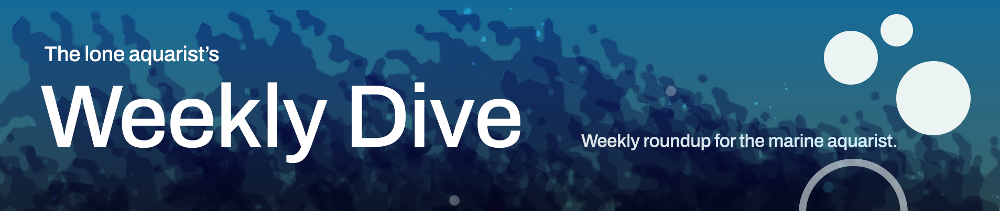
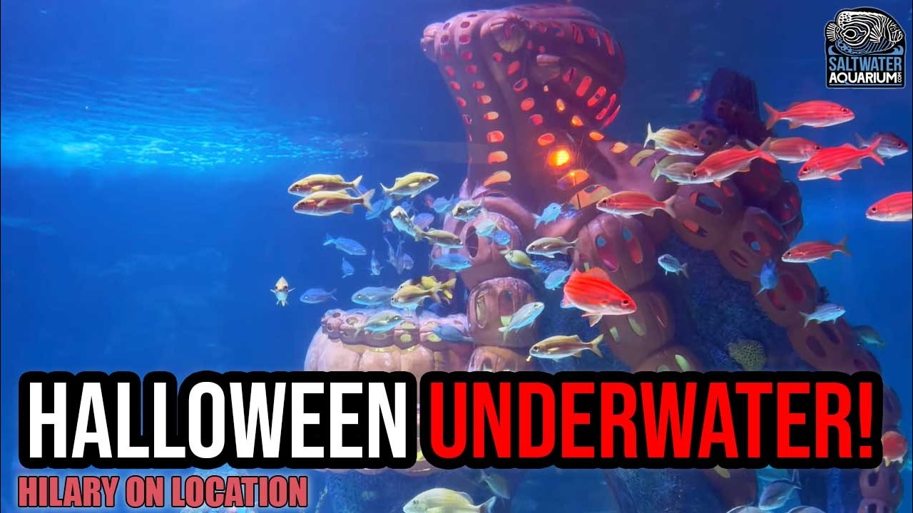

Friday, November 6, 2026 · 24 items · back issues
Howdy, it's Isaac again.
Happy Friday, reefing family, and welcome back to my Weekly Dive.
Here are the biggest things worth knowing:
Let's dive into the news touching our hobby…
The OC Coral Show returns on November 8th in Placentia, CA. Reefkeepers should care because it offers free admission and parking, making it an accessible opportunity to connect with the community and find new livestock.
+2 similar SoCaliReefs · Oct 8 · socalireefs.com
Unique video teaching reef aquarists how to avoid wasting money on generic cleanup crews that starve. Instead, it teaches how to select specific species tailored to their tank's unique waste, ensuring a healthy, balanced aquarium.
YouTube · Oct 24 · youtu.be
Tour of a mature 430-gallon peninsula SPS system in a São Paulo high-rise, highlighting 7 years of Acropora cultivation under Orphek lighting and precise calcium management. Demonstrates advanced husbandry techniques and system longevity for experienced keepers considering large display builds.
16 min World Wide Corals · Nov 5 · youtube.com
Guide to quarantine and acclimation procedures for reef fish. Standard practice explanation with limited new information for experienced aquarists.
7 min ReefDudes · Nov 2 · youtube.com
Reefs.com visited the New England Aquarium's behind-the-scenes operations. Public-aquarium tour documentation offers institutional husbandry perspective.
Reefs.com · Afishionado · Nov 4 · reefs.com
Study documents Pocillopora physiological response to 2023–2024 heat wave in the field. Understanding heat-stress thresholds in wild corals directly informs how to manage temperature in captive systems.
Revista de Biología Tropical · Alexa Karime Rojo-Acosta et al. · Nov 2 · doi.org
New Symbiodiniaceae species formally described, advancing taxonomic resolution of coral photosymbionts essential for nutrition and thermal tolerance. Clearer symbiont classification supports research on coral health and heat resilience.
Ecology and Evolution · Giorgio Terzi et al. · Nov 1 · doi.org
Researchers trained deep-learning models to automatically detect and identify 57 Caribbean coral species in underwater images with 79% accuracy at the species level. Automated identification tools improve monitoring capability for both researchers and aquarists tracking live corals.
Journal of Marine Science and Engineering · Elvin Cordero et al. · Nov 5 · doi.org
High-end mushroom corals reward careful attention to light, placement, and quarantine despite their forgiving nature. Guidance on keeping premium morphs alive improves husbandry outcomes for collectors.
Reef Builders · Scott Shiles · Nov 4 · reefbuilders.com
Research reveals temporal dynamics of coral-defending crustaceans—guard crabs and snapping shrimp—showing complementary roles in host fitness. Understanding these symbiotic relationships clarifies how corals maintain health against predators and sediment.
Oikos · Amalia Murgueitio et al. · Nov 1 · doi.org
Research shows oxybenzone (BP-3) and thermal stress together trigger bleaching in Seriatopora caliendrum. Sunscreen contamination is a tangible stressor affecting reef systems even in tanks exposed to outdoor light.
Anais do Encontro Nacional de Pós Graduação · Ana Beatriz Santos et al. · Nov 4 · doi.org
Research characterizes symbiotic crustaceans associated with pocilloporid corals in the Mexican Pacific, examining their biomass and ecological roles. Understanding these defender-host relationships clarifies how coral colonies maintain health.
Revista de Biología Tropical · Armando González-Salazar et al. · Nov 2 · doi.org
Canadian ocean acidification research group published on OA impacts. Direct relevance to reef chemistry and what drives carbonate saturation in tanks.
Ocean Acidification Research Center — Bluesky · Nov 3 · bsky.app
NOAA's ocean acidification buoys now have public video documentation of monitoring methods. Reef keepers benefit from understanding how pCO₂ and carbonate chemistry are tracked in real seawater systems.
Ocean Acidification Research Center — Bluesky · Oct 30 · bsky.app
iSeahorse logged a Bigbelly seahorse sighting through citizen science. Seahorses are kept in reef tanks and citizen monitoring expands aquaculture and wild-collection data.
Project Seahorse — Bluesky · Oct 30 · bsky.app
Red Sea reef experiences severe bleaching and mortality during marine heatwave coinciding with extreme hypoxia events in mid-2024. Combined thermal and oxygen stress demonstrates complex stressors beyond heat alone driving contemporary coral collapse.
Ecology and Evolution · Shannon Grace Klein et al. · Nov 1 · doi.org
NOAA releases 2025 monitoring report for East and West Flower Garden Banks, two protected reef systems off the Texas coast. Long-term monitoring data directly informs understanding of healthy reef dynamics and bleaching resilience in a working marine sanctuary.
NOAA National Ocean Service — Newsletter · Nov 5 · links-1.govdelivery.com
Soft coral density and depth shape benthic-community structure on Fiji's Rainbow Reef via spatial association and niche partitioning. Understanding how soft corals reorganize reef communities informs predictions as they expand under climate change.
Royal Society Open Science · Nile P. Stephenson et al. · Nov 4 · doi.org
Study tracks algal overgrowth and predation-related tissue loss in Gulf of California corals over six years, quantifying visible health indicators. Direct measurement of stressors affecting reef resilience informs understanding of coral decline mechanisms.
Revista de Biología Tropical · Paola M. Espinosa-Torres et al. · Nov 2 · doi.org
Model shows deforestation-driven sedimentation reduces herbivorous fish populations and ecosystem function on reefs; flexible harvest policies can mitigate damage. Quantifies how terrestrial land use degrades reef fisheries through indirect sediment pathways.
Theoretical Ecology · Russell Milne et al. · Oct 31 · doi.org
Study analyzes benthic community structure and species turnover in transitional zones between rocky and coral reefs along the Brazilian coast. Biogeographic patterns inform understanding of reef ecosystem organization under anthropogenic pressure.
Biodiversity and Conservation · Herick Simas dos Santos et al. · Nov 1 · doi.org
Study maps cold-water coral and sponge communities on Northeast Pacific seamounts within marine protected areas, examining depth-occupancy patterns in low-oxygen zones. Data on structured biodiversity inform conservation strategy for deep-reef ecosystems.
Aquatic Conservation Marine and Freshwater Ecosystems · Megan A. Davies et al. · Nov 1 · doi.org
Australian Society for Fish Biology announces the full conference program for ASFB & AFSS 26. Relevant to marine-science professionals and may include reef-related sessions, but context is minimal.
Australian Society for Fish Biology — Bluesky · Nov 4 · bsky.app

Halloween Underwater! Festive Fish Enrichment at Newport Aquarium | Hilary On LocationNewport Aquarium uses seasonal décor as environmental enrichment for marine animals, including pumpkin structures for fish and invertebrates. Public-aquarium enrichment strategy demonstrates institutional approach to animal welfare and keeper practice.
7 min SaltwaterAquarium.com · SaltwaterAquarium · Oct 31 · youtube.com
One email a week, free. Every item links to its source.
Prefer a feed reader? Follow along by RSS.